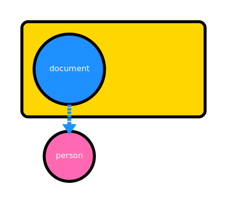

AAO: Always autoreleased objects
In mulle-objc the expectation is that all objects are created autoreleased.
RULE: Objects are passed autoreleased to functions and methods and objects are also returned autoreleased from functions and methods.
When you -autorelease an object, typically during creation, you are tieing
the lifetime of your object to the lifetime of the current autorelease pool.
This is an explicitly autoreleased object, as the autorelease
pool contains a pointer to it.
Your object is now guaranteed to live at least as long as the autorelease pool. It will live longer, if it is directly or indirectly part of another autorelease pool.
In a method, you know the incoming objects are autoreleased. So you don’t
-release or -autorelease them. If you want to return a new object,
you return an autoreleased object only.
@implementation Document
+ (Document *) improvedDocument:(Document *) document
{
Document *improved;
if( [document isPerfect])
return( document); // incoming is autoreleased, outgoing therefore too
improved = [Document object];
// do something smart ...
[improved setPerfect:YES];
return( document);
}
...
To keep an object alive longer, another objects needs to -retain it,
to obtain ownership. As the owning object is oblidged to -autorelease it
before the death of the owner, it will need to keep a reference to this object
for as long as it needs to hold unto it.
@interface Person : NSObject
@end
@interface Document : NSObject
{
@public
Person *_author;
}
@end
@implementation Document
- (void) setAuthor:(Person *) author
{
[_author autorelease];
_author = [author retain];
}
@end
int main( void)
{
Document *document;
Person *person;
document = [document object];
@autoreleasepool
{
person = [Person object];
[document setPerson:person];
// #1
}
// #2
mulle_printf( "%@\n", document->_author);
[document setPerson:nil];
// #3
return( 0);
}
The drawings show the fate of the person object:
 #1 explicit |
 #2 implicit |
 #3 explicit |
| person is created in an inferior pool and referenced by document | The inferior pool is gone, person is still alive through a -retain by document |
document relinquishes ownership with -autorelease of person |
Your retained object is now an implicitly autoreleased object. When the
owner cuts the reference, it will -autorelease your object, therefore turning
it back into an expliticly autoreleased object.
These basic relationships form the foundation of mulle-objc’s object ownership convention.
RULE: The only times that
-releasecalls are made on an object
- if it is not part of any autorelease pool either explicitly or implicitly
- during the death of an autorelease pool (including
-dealloc)- in the scope of a function or method, if each
releaseundoes a preceeding-retainin the same function and the object is no longer accessed or returned after the lastrelease.
Not all objects are autoreleased in mulle-objc
The NSThread objects typically do not reside in autorelease pools. Very short
lived objects may never enter an autorelease pool. Static NSString objects
are never placed in an autorelease pool. Doing a -autorelease on a class or a
TPS object
does nothing and there can be more special cases.
Nevertheless as long as these objects are “static” or permanent, they count as “implicitly” autoreleased, belonging to a virtual universe autoreleasepool. If at any time they would lose their permanence, they would need to be placed into a true autorelease pool.
This was probably the most important chapter of this guide. Always autoreleased objects are the philosophical foundation of mulle-objc.